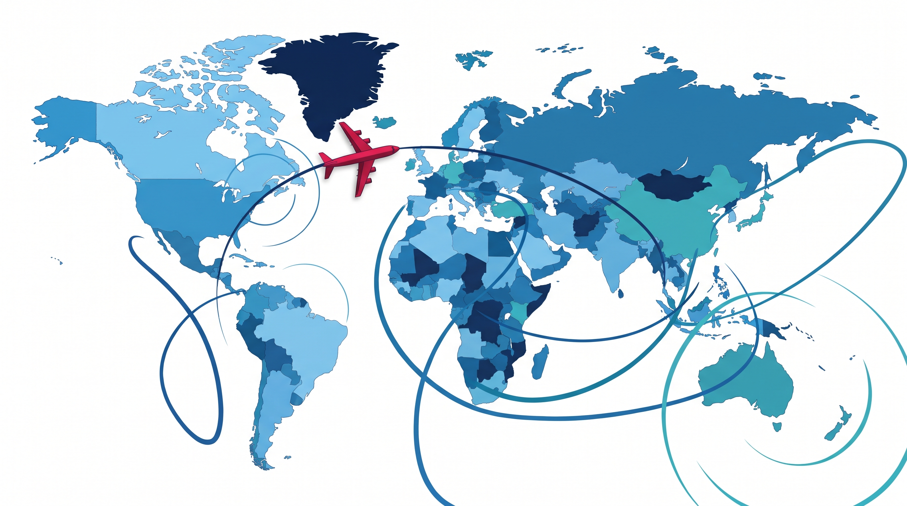
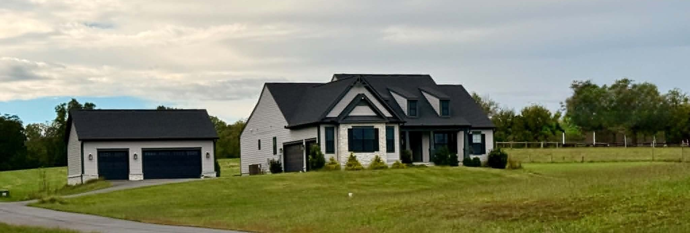

The Petersens are moving.

We've kept a big secret that not many know,
Watching our next big adventure start to grow!
Behind closed doors, we were sealing a deal,
Now the papers are signed, and it's time to reveal!

We may be a bit dramatic,
Forgive us, we're just ecstatic!
It's not a cross-country move like before,
Just two short miles to our new front door!
The Petersen Ohana can now be found at
10580 Manley Road, Nokesville, VA 20181
Tap the card to flip.